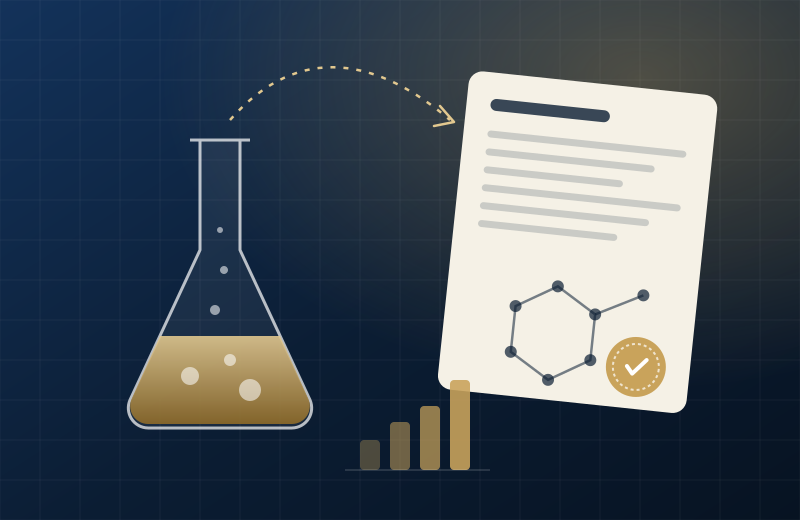

Capital Markets資本市場
Helping companies explore the US equity markets.協助企業探索美國股票市場。
- US equities美股市場
- IPO advisoryIPO 上市顧問
- Mergers & acquisitions併購
Capital Markets × Science Ventures 資本市場 × 科研創業
US Equities · Biotech · Patents · Startups 美股 · 生物科技 · 專利 · 初創企業
Connecting growth companies with the US capital markets, and turning university research into patented, commercial technology. 連結成長型企業與美國資本市場，並把大學科研轉化為具專利的商業技術。
IPO & M&A
US equity market advisory美股上市及併購顧問
2021
Co-founded a nanotech venture聯合創辦納米科技企業
3 + 4
Granted HK patents + mainland China filings香港已授權專利＋中國內地申請
EN · 中
English & Chinese中英雙語溝通
01 — About關於

I work across capital markets and science-based ventures. On the markets side, I advise companies on accessing the US equity markets through IPO advisory and M&A. On the venture side, I co-founded Nanotech Innovation Limited while at university, where we develop nano-coatings and biomedical targeted technologies backed by patents.
我的工作橫跨資本市場與科研創業。在資本市場方面，我透過 IPO 顧問及併購業務， 協助企業進入美國股票市場；在創業方面，我於大學期間聯合創辦納米科研技術有限公司， 研發具專利的納米塗層及生物醫療標靶技術。
Having been on both sides — building a technology company and helping companies raise capital — I understand what founders need to explain to investors, and what investors need to see from founders.
同時經歷過「創辦科技公司」與「協助企業融資」兩個角色，令我明白創辦人需要向投資者說清楚甚麼， 也明白投資者希望從創辦人身上看到甚麼。
I was born and raised in Hong Kong. I started my first company at 20 with little more than a laptop, and by 22 the business had expanded to other countries. Outside work I volunteer, give talks to students, have helped organise cultural exchanges, have worked with NGOs on sustainability projects, and have spoken on international stages.
我在香港出生和長大。20 歲時創辦第一間公司，起步時差不多只有一部手提電腦；到 22 歲，業務已拓展至其他國家。工作以外，我參與義工服務、到學校為學生演講，曾協辦文化交流活動、與非政府組織合作推動可持續發展項目，也曾在國際舞台上演講。
When the future has already come當未來已經到來
“I don’t just want to build a city, I want to build a future.”「我不只想建造一座城市，我想建造一個未來。」
— on Tyler’s Future City——談 Tyler’s Future City
Business is not just about making money. It is about solving real problems, giving back, and showing the next generation that it is okay to dream big. 做生意不只是為了賺錢，而是要解決真正的問題、回饋社會，並讓下一代知道：敢於有大夢想，是可以的。
From Desert, to Destiny
02 — Expertise專業領域
Helping companies explore the US equity markets.協助企業探索美國股票市場。
Hands-on R&D leadership in a deep-tech venture.親身帶領深科技企業的研發工作。

Building a company from the university lab outward.由大學實驗室起步，建立一家企業。
03 — Experience經歷
富輝集團 · Fuway
Advising companies on the US equity markets, focusing on IPO advisory and M&A.為企業提供美國股票市場相關顧問服務，專注 IPO 上市及併購。
BTRDCC · Biochemical Technology Research & Development Consultation Centre — a project of Nanotech Innovation Limited納米科研技術有限公司旗下項目
AI-integrated biotechnology: patented technologies combining nano-targeting with research into cancer-therapy technologies.結合 AI 的生物科技：以專利技術結合納米標靶，研發癌症治療技術。
Nanotech Innovation Limited · 納米科研技術有限公司
Co-founded the company in 2021 while at university; it began as Master Masker Technology Company Limited. Leading operations for R&D in nano-coatings and biomedical targeted technologies, with patented technologies.2021 年於大學期間聯合創辦，前身為 Master Masker Technology Company Limited。負責公司營運，研發納米塗層及生物醫療標靶技術，並擁有相關專利。
Social Enterprise Research Academy · SERA
Co-founder聯合創辦人
AI-integrated biotechnology, nano-targeting and cancer-therapy R&D — a project of Nanotech Innovation Limited.結合 AI 的生物科技、納米標靶及癌症治療研發，為納米科研技術有限公司旗下項目。
Co-founder & COO · since 2021聯合創辦人兼營運總監 · 2021 年至今
Nano-coatings and biomedical targeted technologies; founded at university. Holder of three granted Hong Kong patents; runs the BTRDCC project.納米塗層及生物醫療標靶技術；於大學期間創立。持有三項香港已授權專利，並營運 BTRDCC 項目。
Founder · 2024–2025創辦人 · 2024–2025
Founded and ran a pet-services business for cats: customers, suppliers, staff and day-to-day P&L.創辦並經營貓咪寵物服務業務，親身管理顧客、供應商、員工及日常收支。


04 — Venture創業
納米科研技術有限公司
Founded in 2021 at university, Nanotech Innovation develops nano-scale technologies with real-world applications — from advanced surface coatings to targeted biomedical solutions — and protects its work through patents. 公司於 2021 年在大學期間創立，研發具實際應用價值的納米技術，範圍由先進表面塗層到生物醫療標靶方案，並以專利保護研發成果。
Role: Co-founder & COO職位：聯合創辦人兼營運總監

Research and development of nano-scale surface coatings.研發納米級表面塗層技術。
Targeted technologies for biomedical applications.應用於生物醫療的標靶技術。
Intellectual property protecting the company's technologies.以知識產權保護公司技術。
Intellectual property知識產權
Nanotech Innovation Limited
Composition with moisturising and hydrating effects, and its use
Issued 5 Jul 20222022 年 7 月 5 日發出 · Formulation配方
Nanotech Innovation Limited
Composition with a rapid skin-brightening effect, and its use
Issued 5 Jul 20222022 年 7 月 5 日發出 · Formulation配方
Nanotech Innovation Limited
Composition with anti-wrinkle and anti-ageing functions, and its use
Issued 5 Jul 20222022 年 7 月 5 日發出 · Formulation配方
Nanomaterial purification device
Filed 3 Sep 2024 · utility model2024 年 9 月 3 日申請 · 實用新型 · Process equipment工藝設備
Sieving machine for tablet production
Filed 3 Sep 2024 · utility model2024 年 9 月 3 日申請 · 實用新型 · Process equipment工藝設備
Horizontal centrifuge device
Reported Sep 20242024 年 9 月報備 · Process equipment工藝設備
Drug-solution preparation tank
Reported Sep 20242024 年 9 月報備 · Process equipment工藝設備
Titles are the official Chinese titles; English titles are informal translations. Status is as listed by the applicant; details can be checked on the Hong Kong IPD and CNIPA registers.名稱為官方中文名稱，英文名稱為非正式翻譯。狀態按申請人記錄列出，詳情可於香港知識產權署及國家知識產權局查詢。
Media & recognition媒體及認可
Video · YouTube影片 · YouTube
The video player loads only when you press play.按下播放後才會載入影片播放器。
Watch on YouTube在 YouTube 觀看 ↗Case feature案例專題
A case feature on the company I co-founded at university.介紹我於大學期間聯合創辦的公司。
Read the case閱讀案例 ↗
Recognition認可
At the Social Enterprise Research Academy's 10th-anniversary event.攝於社會企業研究院十周年活動。

Award · 2023獎項 · 2023
Awarded to Master Masker Technology Company Limited (now Nanotech Innovation Limited) at Business Innovator's 2023 Most Innovative Enterprise Awards.Master Masker Technology Company Limited（現為納米科研技術有限公司）於商業創意多媒體平台 BUSINESS INNOVATOR 主辦的《2023 年度卓越創新企業大獎》中獲頒此獎。
Along the way一路走來


Projects項目
Insights觀點
Founders ask about valuation and fees first. The thing that actually decides whether a listing happens is whether a dozen workstreams can land in the same window.創辦人通常先問估值和費用。真正決定能否上市的，是十多條工作線能否在同一個時間窗口內完成。
Read →閱讀 →A beautiful particle in the lab is the easy part. Making the same particle a hundred times is where most projects stall.在實驗室做出一顆漂亮的粒子是容易的部分。把同一顆粒子做一百次，才是大部分項目卡住的地方。
Read →閱讀 →Helping close a USD 5 million round in 45 days taught me that speed is mostly decided before the first investor meeting.協助在 45 日內完成 500 萬美元融資，令我明白：速度大多在第一次見投資者之前已經決定。
Read →閱讀 →05 — Education學歷
HKUST
Graduate畢業
UQ
Master's studies碩士課程修讀
FUDAN
Admitted to MBA program獲 MBA 課程錄取
06 — Work with me合作
Discuss IPO pathways and the US equity markets.探討 IPO 路徑及美國股票市場。
Get in touch聯絡 →Explore acquisition, merger and partnership opportunities.探索收購、合併及合作機會。
Get in touch聯絡 →Nano-coatings, biomedical technologies and patents.納米塗層、生物醫療技術及專利合作。
Get in touch聯絡 →07 — Contact聯絡
For biotechnology, IPO, M&A or technology collaboration enquiries, I'd be glad to hear from you. 如有生物科技、IPO、併購或技術合作查詢，歡迎與我聯絡。